Don't know where to go yet? Leave “Going to” on Anywhere and we find the middle for you — these are simply places that often work well.
Northern Europe
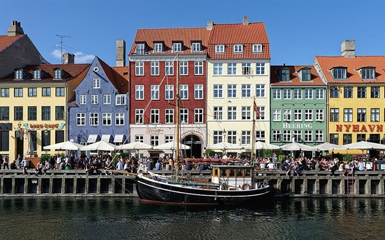
CopenhagenDenmarkScandinavia's big hub, easy to reach from the Nordics and the rest of Europe.Plan a trip here →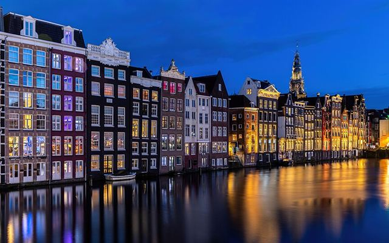
AmsterdamNetherlandsOne of Europe's best-connected airports, with a compact centre to explore together.Plan a trip here →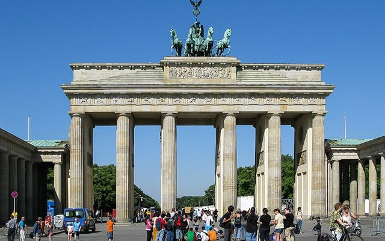
BerlinGermanyBig, lively and often good value, with flights from all over Europe.Plan a trip here →Central Europe
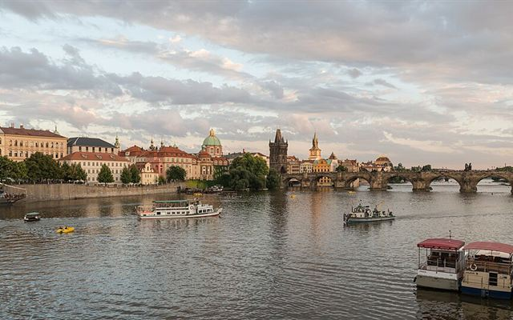
PragueCzechiaA beautiful old town right in the middle of Europe.Plan a trip here →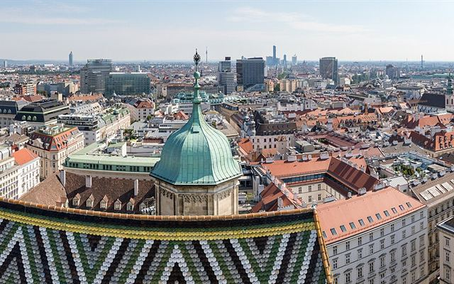
ViennaAustriaAn elegant hub between east and west, with cafés and music.Plan a trip here →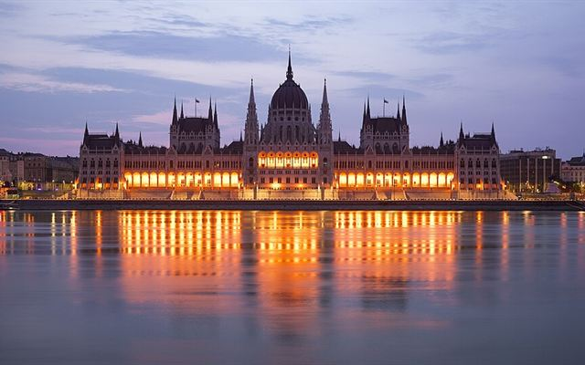
BudapestHungaryThermal baths, river views, and often low fares from many cities.Plan a trip here →Southern Europe
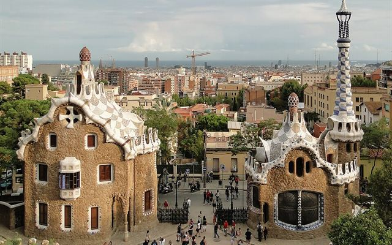
BarcelonaSpainBeach and city in one, with sunshine for much of the year.Plan a trip here →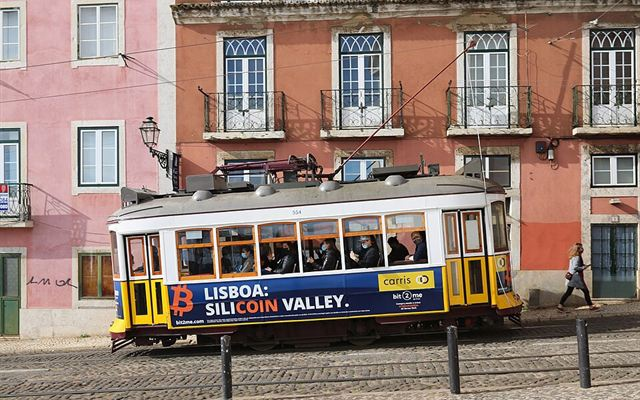
LisbonPortugalMild weather, hills and sea views on Europe's western edge.Plan a trip here →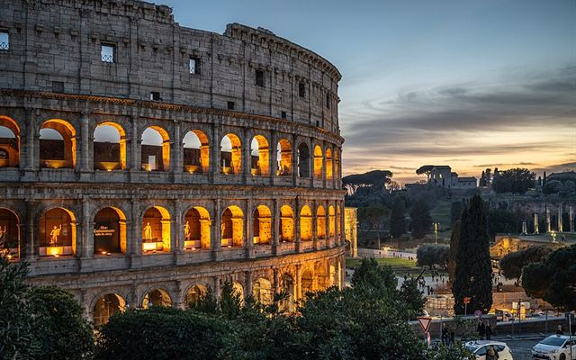
RomeItalyFood and history, with flights from almost everywhere in Europe.Plan a trip here →Big hubs, for longer distances
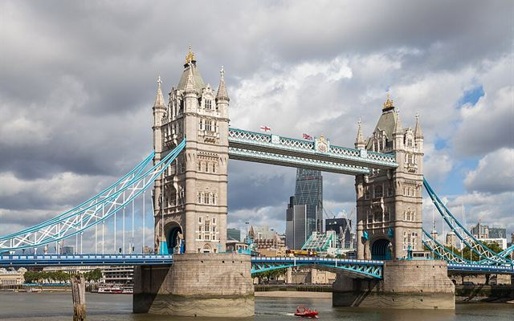
LondonUnited KingdomSeveral airports and flights from nearly everywhere in the world.Plan a trip here →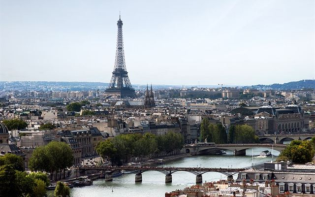
ParisFranceBig airports with direct flights from many continents.Plan a trip here →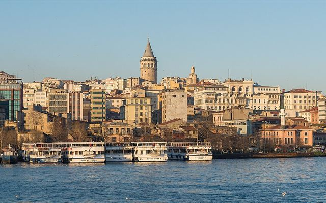
IstanbulTürkiyeWhere Europe meets Asia — a natural midpoint for long distances.Plan a trip here →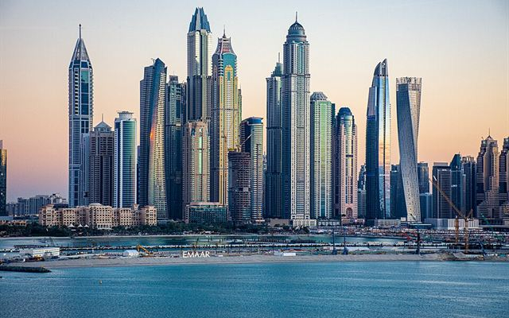
DubaiUnited Arab EmiratesA stopover city between Europe, Asia and Africa.Plan a trip here →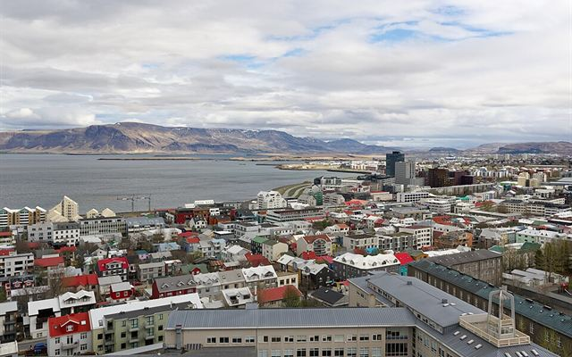
ReykjavikIcelandBetween Europe and North America, with a lot of nature to share.Plan a trip here →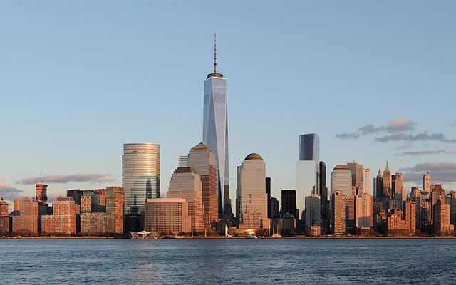
New YorkUnited StatesThe big meeting point on the American side of the Atlantic.Plan a trip here →Or let us find the middle for you
Find where to meetPhotos from Wikimedia Commons, cropped — Copenhagen: Jakub Hałun, CC BY-SA 4.0 · Amsterdam: Basile Morin, CC BY-SA 4.0 · Berlin: Dietmar Rabich, CC BY-SA 4.0 · Prague: DXR, CC BY-SA 4.0 · Vienna: Dietmar Rabich, CC BY-SA 4.0 · Budapest: Godot13, CC BY-SA 4.0 · Barcelona: Bernard Gagnon, CC BY-SA 3.0 · Lisbon: Ingo Mehling, CC BY-SA 4.0 · Rome: Wilfredor, CC0 · London: Diego Delso, CC BY-SA 4.0 · Paris: ThePromenader, CC BY-SA 3.0 · Istanbul: Arild Vågen, CC BY-SA 3.0 · Dubai: Norlando Pobre, CC BY 2.0 · Reykjavik: Jakub Hałun, CC BY-SA 4.0 · New York: King of Hearts, CC BY-SA 3.0.


_2015-02.jpg){kind=link}